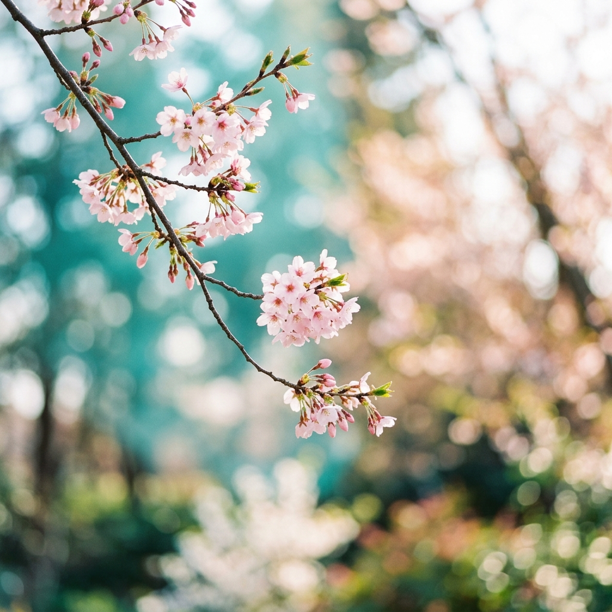
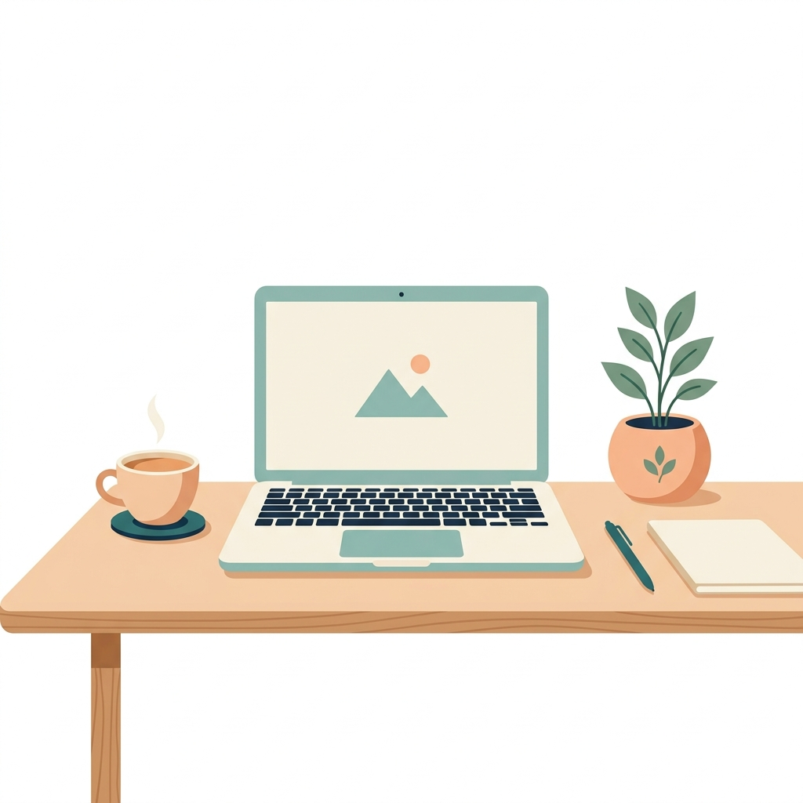
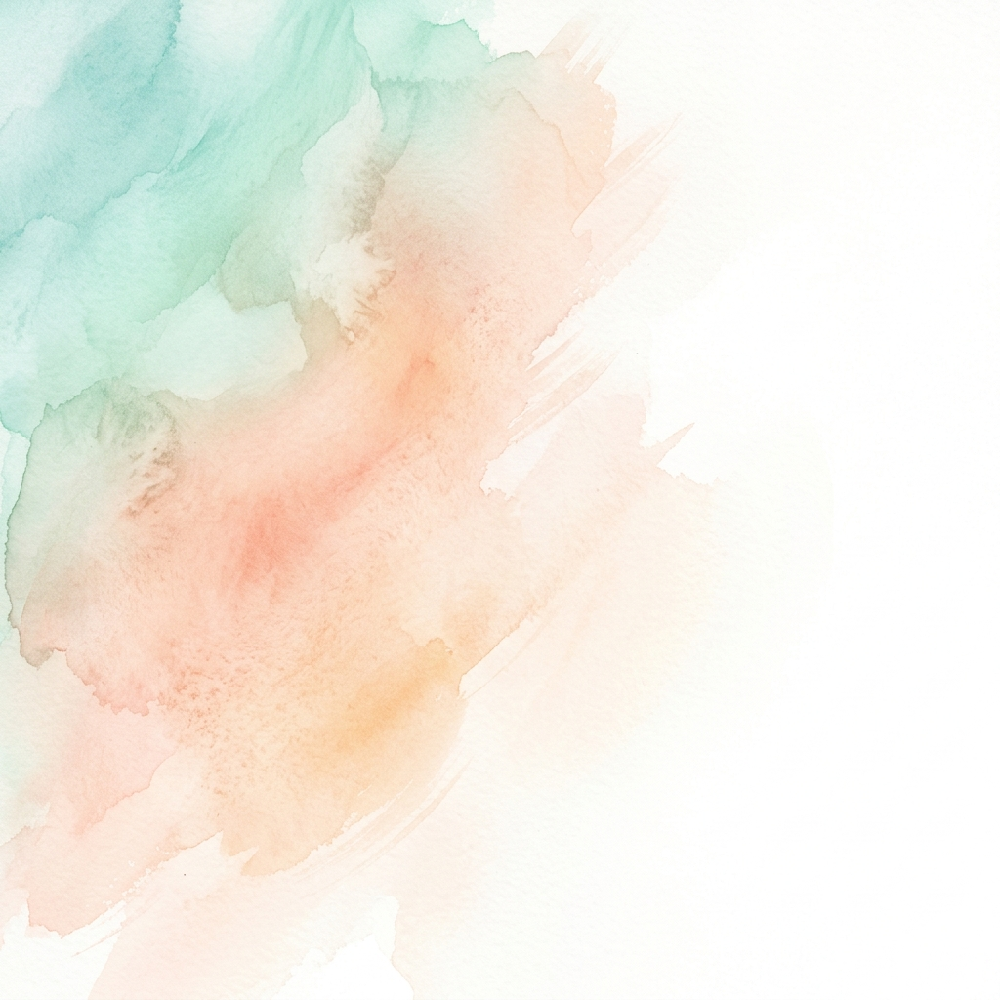

每一次思考都是一次折叠，留下痕迹，成为记忆。这里记录技术探索、设计感悟与日常灵感。

探讨如何将传统东方审美融入现代网页设计，从字体选择、行间距到留白处理，构建一个兼具美感与可读性的中文博客体验。
Astro 以其出色的内容优先架构和零 JS 默认策略，成为博客框架的理想选择。本文将带你从零开始搭建。

Astro 以其出色的内容优先架构和零 JS 默认策略，成为博客框架的理想选择。
少即是多。在设计和写作中，空白不是浪费，而是呼吸的空间。

记录一个普通午后在公园散步时捕捉到的光影瞬间和季节感受。